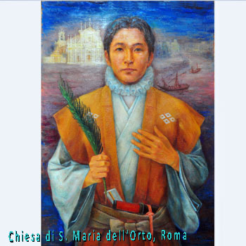

Isusovački blaženici
Svećenik · Mučenik
Bl. Julijan Nakaura
Japanski isusovac, sudionik poslanstva mladih u Europu, ostao je uz progonjene kršćane i podnio mučeništvo nakon dugih godina skrovite svećeničke službe.
Tekst je preveden i prilagođen uz pomoć umjetne inteligencije.

Izvor slike
- Spomendan
- 21. listopada
- Zaštitništvo
- Nije navedeno u izvoru
- Djelovanje
- Progoni i progonstvo · Mučeništvo
- Razdoblje
- 16., 17. stoljeće
- Datum smrti
- 21. listopada 1633.
- Mjesto službe
- Japan
- Svećeničko ređenje
- 1608.
U kalendaru zbirke koristi se dan smrti. Taj datum nije zasebna potvrda liturgijskoga spomendana.
Životopis
Julijan Nakaura odrastao je uz pobožnu majku nakon pogibije oca, kršćanskoga samuraja. Kao sjemeništarac odabran je za japansko mladenačko poslanstvo u Europu. Putovanje je potrajalo više godina, a vratili su se 1590. Nakaura je pristupio isusovcima, studirao teologiju u Macau i prije ređenja služio u Arimi, Kyotu i Hakati. Svećenički je red primio 1608.
Njegov susret s Grgurom XIII. ostao je posebno snažna uspomena. Neposredno prije dolaska u Rim teško se razbolio. Papa ga je primio odvojeno kako ga ne bi iscrpila duga svečanost, zagrlio ga i blagoslovio. Poslanstvo je upoznalo i Siksta V. te španjolskoga kralja. Povratak nije značio nastavak dvorskih počasti: japanske vlasti već su pooštravale odnos prema kršćanstvu, pa je Nakaura svoju budućnost izabrao među ugroženim sunarodnjacima.
Japanska biskupska komisija naglašava i manje poznato razdoblje njegove službe. U Yatsushiru je djelovao prije odlaska na teološke studije. Po povratku je podnio odgodu željenoga ređenja bez jasno obrazložena razloga. Poslije je iz Kuchinotsua posjećivao Amakusu, Yatsushiro, Yanagawu i Kokuru. Nije se vezao uz sigurnu ustanovu: kako su se okolnosti mijenjale, središte djelovanja prenosio je ondje gdje je mogao doprijeti do vjernika. Sačuvana je i njegova ranija pisana spremnost na mučeništvo.
Nakon izgona 1614. ostao je među isusovcima koji su služili potajno. Noćna putovanja i skrivanje toliko su ga iscrpili da su ga morali nositi. Uhićen je potkraj 1632. i zatvoren u Nagasakiju. Mučenje vješanjem nad jamom počelo je 18. listopada 1633.; umro je 21. listopada. Njegova vjernost nije ovisila o mogućnosti javnoga djelovanja. Godine 2008. blaženim je proglašen u skupini 188 japanskih mučenika.
Tekst je preveden i prilagođen uz pomoć umjetne inteligencije.
Pročitaj više na izvornoj stranici ↗